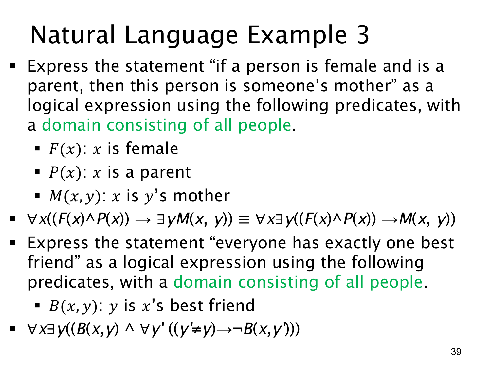

L1.2 · 第 39 页讲解原文
查看这一页课件

自然语言翻译：存在某人的母亲与唯一挚友
本页两题的论域都是所有人，练习把“某人”和“恰好一个”分别表达清楚。
第一题设 F(x) 表示“x 是女性”，P(x) 表示“x 是家长”，M(x,y) 表示“x 是 y 的母亲”。“若某人是女性且是家长，则此人是某人的母亲”可写为
∀x((F(x)∧P(x))→∃yM(x,y)).
先任取一个人 x；只有当 F(x) 与 P(x) 同时真时，才要求找到某个人 y，使 M(x,y) 真。这里 y 可以随 x 不同而改变。原页还写出等价的 ∀x∃y((F(x)∧P(x))→M(x,y))：在非空的人类论域中，y 不出现在前件里，故可把该存在量词移到前件外；当前件假时，任取一个 y 即可满足条件句。
第二题设 B(x,y) 表示“y 是 x 的挚友”。“每个人恰好有一个挚友”必须同时表达存在性和唯一性：
∀x∃y(B(x,y)∧∀y′(y′=y→¬B(x,y′))).
对每个 x，先找一个 y 使 B(x,y) 真，这是“至少一个”；再要求任何不同于 y 的 y′ 都不满足 B(x,y′)，这是“至多一个”。两者合起来才是“恰好一个”。等价地，唯一性部分可写作 ∀y′(B(x,y′)→y′=y)。
若只写 ∀x∃yB(x,y)，只能保证每个人至少有一位挚友，允许多位。课件的公式没有额外写 y=x；如果题目需要形式上排除“自己是自己的挚友”，还须补充该条件，或由 B 的定义明确排除。